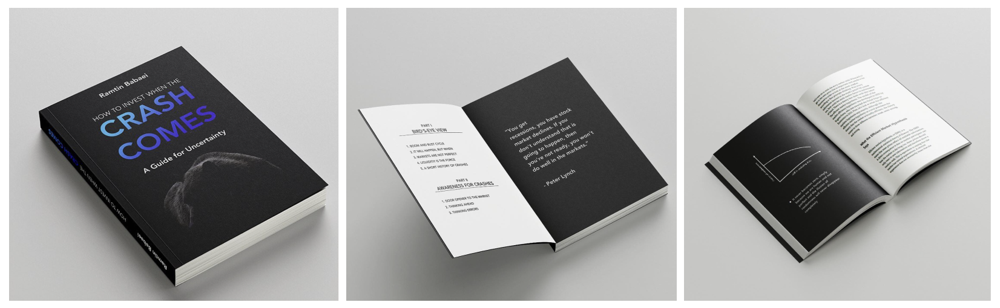
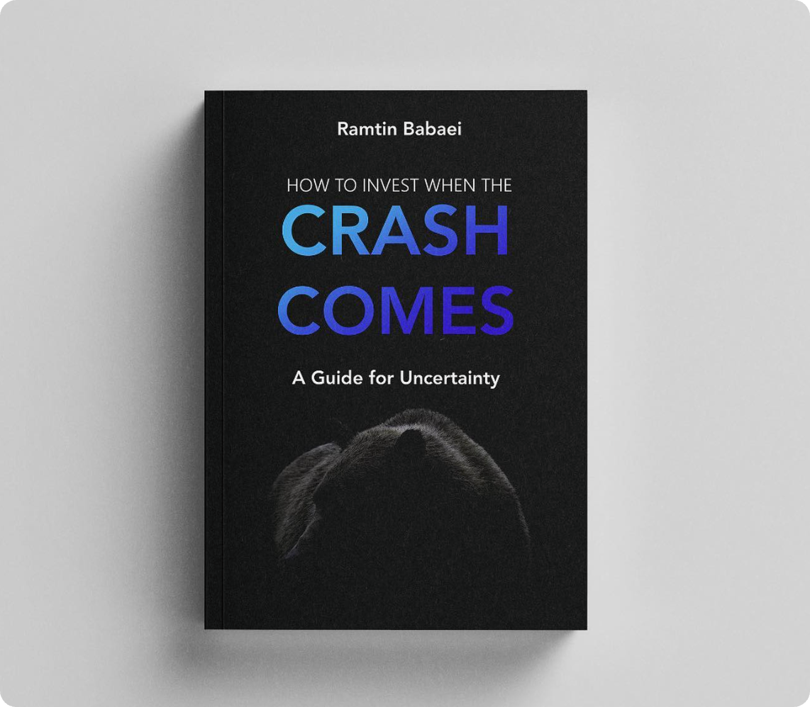

How to Invest When the Crash Comes

This book serves as your guide through turbulent times, equipping you to navigate the inevitable challenges that arise in the financial markets. Crashes are an inherent aspect of our economic system, and as an investor, it’s crucial to be prepared with strategies that can mitigate their impact and simplify your financial life. Understanding that market crashes are unavoidable, this book emphasizes the importance of preparation. The adage “after the crash is before the crash” holds true—what you learn now will serve you in future downturns. We look into the foundational principles of the stock market, offering insights that are invaluable to both novice and seasoned investors. By exploring these concepts, you’ll develop the skills needed to manage market crashes effectively.
In the first half of the book, we explore the fundamental concepts of the markets from a broad perspective, laying the groundwork for a deeper understanding. The second half transitions into actionable strategies and rules designed to help investors thrive, even in the face of a downturn. You’ll cultivate an awareness of market crashes, recognizing them not as setbacks, but as opportunities that, when navigated wisely, can be advantageous.
This book will teach you how to identify potential crash signals early, understand their causes, and invest strategically before and during these periods of volatility. By the end, you’ll not only be prepared for the next crash — you’ll be ready to turn it to your advantage.
